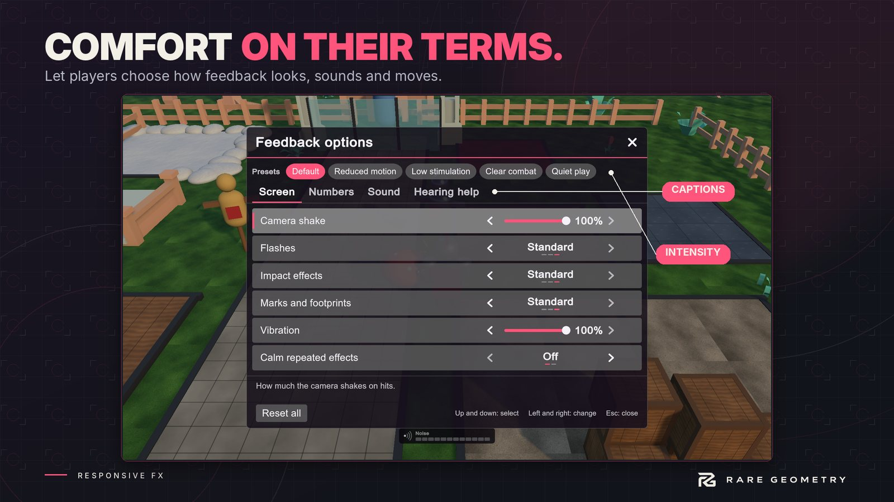

Player options and screens
Players differ. Some want every hit to shake the screen; some get ill from it. Responsive FX gives players options, and gives you the say over which ones.


One rule holds everywhere: a player option never changes damage, gameplay timing or what AI hears. It only changes what the player sees, hears and feels.
What players can change #
| Group | Options |
|---|---|
| Screen | Camera shake, Flashes, Impact effects, Marks and footprints, Vibration, Calm repeated effects, Hit pause |
| Numbers | Damage numbers (off, critical only, all, combined), Number size, Number motion, Health bars |
| Sound | Footstep volume, Impact volume, World volume |
| Hearing help | Sound captions, Caption size, Direction cues, Sound ring, Noise meter |
Every option starts "as authored": nothing changes how your game feels until you or the player moves it.
You decide (Impact Lab, Players tab) #
Make the Player Feedback Options asset there. For each option choose Editable (the player may change it), Locked (shown but fixed) or Hidden, and set its start value and its limits. Four policies fill the table for you: Arcade freedom, Competitive clarity, Cinematic and Stealth readability.
Choices are remembered between sessions unless you turn that off and save them yourself
(PlayerFeedback.ToJson() and FromJson).
The options screen #
Add Feedback Options Panel to any object. Call Show() from your pause menu, or give it a key.
It is laid out like a console game's settings: tabs for the groups, one row per option, the value stepped with an arrow each side or dragged, a dot and a small undo beside anything that differs from your value, the highlighted option explained at the bottom, presets along the top (Default, Reduced motion, Low stimulation, Clear combat, Quiet play) and Reset all. It works with a mouse, keys or a gamepad, and on a narrow or upright screen each control moves under its name. The game's HUD is hidden while it is open, and it can pause the game.
Restyle it in the inspector: colours, text size, corners, where it sits, how wide it is. Prefer your own menu? Skip the panel and call the API:
PlayerFeedback.Set(FeedbackOption.Shake, 0.5f);
PlayerFeedback.ApplyPreset(PlayerFeedbackPreset.ReducedMotion);
float shake = PlayerFeedback.Get(FeedbackOption.Shake);
Set returns false when the option is locked or hidden, and clamps to your limits.
Sound for players who cannot hear it #
- Sound Captions shows a short caption for sounds that matter ("Footsteps on gravel"), with an arrow for where it
came from. The player turns captions on (Important or All) and picks their size.
captions.Show("Alarm", position)adds your own. - Sound Ring shows sounds as marks on a ring around the middle of the screen: a glowing arc on the side each
sound came from, with an icon for footsteps, an impact or something loud, and an eye for a listener who just heard
the player. Marks turn with the camera.
ring.Show(position, SoundRing.Cue.Loud)adds your own. It can show always (stealth games, shooters) or only while the player has captions on. - Noise Meter shows how much noise the player is making, in segments, and changes colour and word the moment someone hears it.
Each is one component on any object, with its own colours, size and place.
The player's side of a hit #
Player Hit Feedback on the player shows a damage vignette, a glowing arc on the side each hit came from (it keeps pointing at the attacker while the camera turns; a single arrow is the other style), a heartbeat pulse at low health, and rumble on a gamepad or phone.
Works with your settings menu #
If another product provides accessibility settings through the shared Core (reduced motion, shake, flash and haptics scales), Responsive FX follows them. When nothing else does, the player's choices here are offered the same way, so other products can follow them.